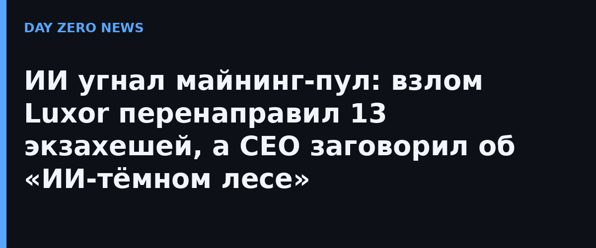

В выходные атакующие получили доступ к Commander — платформе Luxor для управления майнинг-оборудованием, — и переписали настройки клиентов. По первоначальным сообщениям хостинг-провайдера CoreX, было перенаправлено около 64 тысяч майнеров примерно на 13 экзахешей в секунду — это заметная доля всей сети Bitcoin, — а адреса выплат подменили. Сама Luxor цифры не подтвердила, заявив, что задето «чуть больше дюжины» аккаунтов; остальные сервисы компании (пул Luxor и LuxOS) не затронуты.
CEO Luxor Ник Хансен подтвердил, что вторжение шло через «софистицированный вектор с применением ИИ», не раскрыв деталей. Его формулировка пугает проще любых деталей: «разблокированные» (abliterated) модели работают против вашей инфраструктуры 24/7, ищут малейшую щель и почти мгновенно расширяют плацдарм. Атаки, по его словам, не замедляются — ускоряются по мере улучшения моделей и притока новых атакующих. Отдельного технического разбора с описанием роли ИИ пока нет: Luxor обещала опубликовать постмортем.
Luxor залатала уязвимость в Commander в течение двух часов после обнаружения и вернула машины клиентов в исходные пулы, пообещав полностью компенсировать потерянную на угнанных мощностях выручку. Правда, награбленное атакующим всё же досталось: биткоин-адрес, связанный с инцидентом, получил две выплаты из пула OCEAN суммарно около 0,162 BTC (примерно 10,5 тысячи долларов). Самой показательной мерой стал другой шаг: компания заморозила большую часть разработки новых функций, купила собственные GPU и запустила на них unrestricted open-weight модели для защиты — «единственная защита в новом тёмном лесе, управляемом ИИ», как выразился Хансен, процитировав поговорку про ружьё.
Инцидент вписывается в череду: индийский киберагентство на этой неделе предупреждало о группе Crafty Falcon, которая ИИ-инструментами атакует криптобиржи и крадёт ключи кошельков; в октябре Chainalysis призналась, что к ней проникли «агрессивными агентными техниками» (пострадали хэши паролей и живые токены); а сентябрьский отчёт Anthropic описал «фабрики эксплойтов», где ИИ автоматизирует поиск уязвимостей иконструирования атак. Вывод для всех, кто держит у себя агентские рантаймы и ключи, один: оборона тоже обязана быть машинной и круглосуточной.